Lesson 09 · Tarot
The parade of lesson 7 ended with the powers that outrank a victor. The second half of the sequence carries on past them: how a life ends, what waits beyond it, and the world made new at the close of time — with one card standing outside the whole procession, because it was never a trump.
By the end of this page you can give the three-layer reading for every one of the twenty-two trumps — the eleven from lesson 7 and the eleven here — and you have run the first round of a flashcard drill on all of them. Along the way you learn why the Hanged Man looks so calm, why the Star's printed meaning contradicts its own picture, and where three different traditions have put the Fool.
Lesson 7 walked the first eleven trumps as a parade a fifteenth-century player could read at sight: people sorted by station, then the forces no station protects you from. The parade does not stop at Justice: the remaining ten subjects continue the same procession into territory every churchgoer of 1450 knew from sermons, frescoes and the Book of Revelation — the disgraceful death and the ordinary one, the temptations and punishments beyond the grave, the heavens in rising brightness, the trumpet of the Last Judgement and the renewed world. The method is unchanged: for each card, start from where it stands in the sequence, then add what the occultists and Waite did to it. One caveat about the sequence itself comes first.
The order in your hands is the French one, fixed by the printed decks. Fifteenth-century Italy did not agree on it: "In some Italian tarot decks of the 15th and 16th centuries, the virtues were grouped together after the Pope," and "in the earliest decks from Florence and Bologna, the Judgment card was topmost and the World card preceded it" (Tarot Heritage, on Temperance; on the World). The stretches below describe the sequence you own, and the broad shape the Italian orders shared.
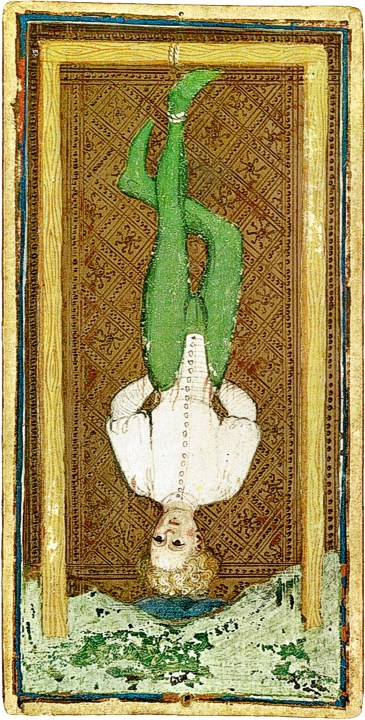
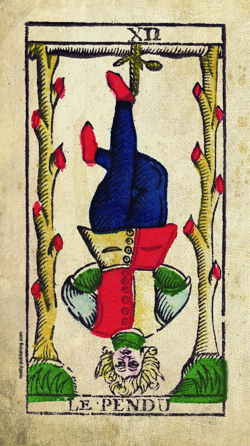
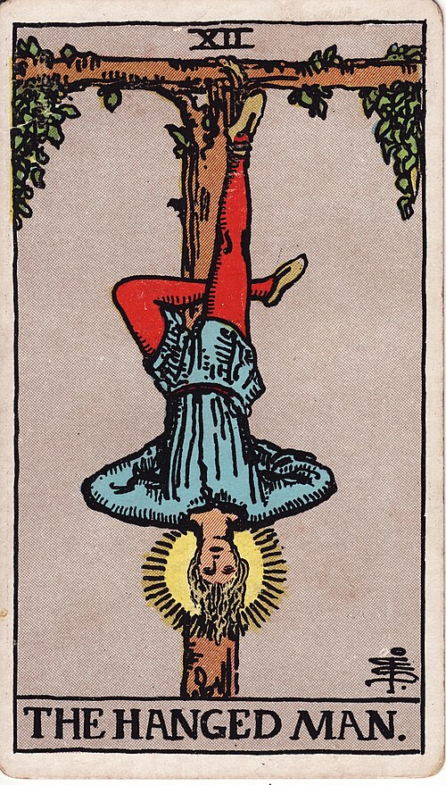
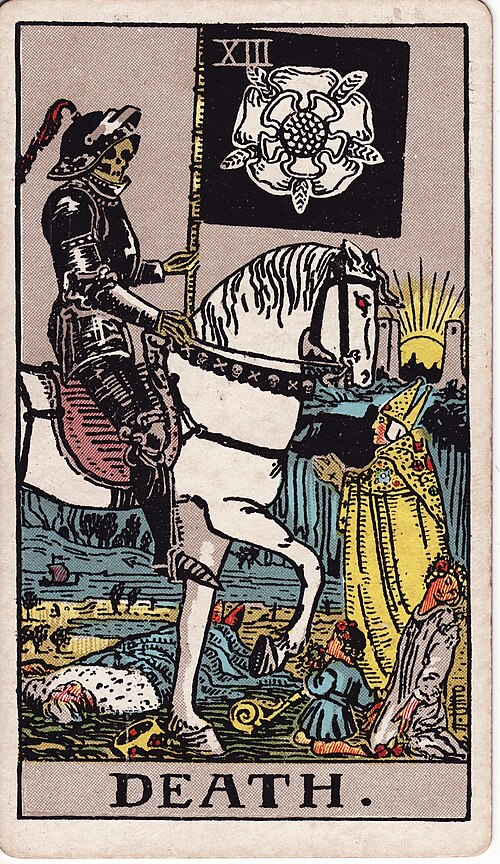
The Hanged Man is the card in this half most thoroughly repainted by the layers, and his first players found nothing puzzling in him. A man hanging upside down by one foot was a familiar sight in a fifteenth-century Italian city, because that is how traitors were shown in the pitture infamanti, the shame paintings commissioned on public walls for men who had fled before they could be executed. The card's fifteenth-century names were Il Traditore and L'Impiccato, the Traitor and the Hanged Man, and a Bolognese list of card meanings from about 1750 still gives it "betrayal". The Visconti-Sforza card even carries a family history: in 1409 the Pope had ordered a shame painting of Muzio Attendolo Sforza, father of the duke who commissioned the deck, for switching sides in a war he had been hired to fight. In 1450, then, this card meant disgrace and the punishment for treachery, with nothing mystical about it.
"The tarot Hanged Man is a representation of the Pitture Infamanti, 'shame paintings', that were painted in public areas of Italian cities during the renaissance. Traitors who skipped town and couldn't be executed in person were hung in effigy as paintings on the walls of public buildings" — and "during the fifteenth century, the Hanged Man card was known as either the Traitor (Il Traditore) or the Hanged Man (L'Impicatto)" (Tarot Heritage, on the Hanged Man).
The rewriting began when the card crossed into France, where nobody knew the custom. Court de Gébelin decided in 1781 that the card makers had printed the figure upside down out of ignorance and that he was really the virtue Prudence, which is where the "wisdom" and "discernment" of the later word-lists come from. Waite then finished the job: his figure hangs from "living wood, with leaves thereon"; "the face expresses deep entrancement, not suffering"; and "the figure, as a whole, suggests life in suspension, but life and not death" — while he dismisses the earlier readings in a row: "It has been called falsely a card of martyrdom, a card of prudence, a card of the Great Work, a card of duty" (Pictorial Key, XII). His printed list keeps a foot in both camps: "Wisdom, circumspection, discernment, trials, sacrifice, intuition, divination, prophecy." Today's reading takes the calm face at its word — a pause, surrender, letting go, the view from the other way up (today's consensus) — and you can now say that this is the 1909 picture speaking, with the 1450 traitor as the reason the man is upside down at all.
Death needed no rewriting, and Smith's card reaches back past the Marseille pattern. The Marseille Death is a walking skeleton with a scythe; the fifteenth-century Italian cards more often showed Death on horseback riding down people of every rank, an image from the plague years, and that is the version Smith painted — an armoured skeleton on a white horse, a king already fallen, a bishop pleading, a child and a maiden in the path. Waite says plainly that he preferred "one of the apocalyptic visions" to "the crude notion of the reaping skeleton" (Pictorial Key, XIII). His printed list is blunt, "End, mortality, destruction, corruption", and his essay softens it toward "change, transformation and passage from lower to higher", which is where the modern reading of endings and transitions sits. Point at the horizon when you say it: "between two pillars on the verge of the horizon there shines the sun of immortality" — the same two towers turn up again on the Moon.
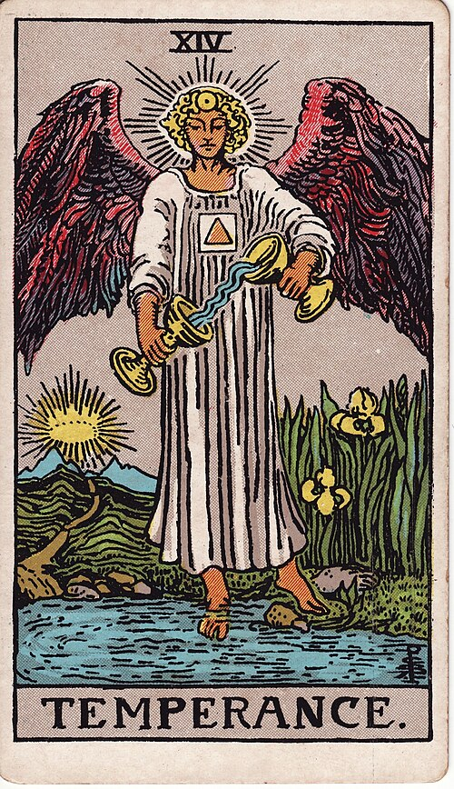
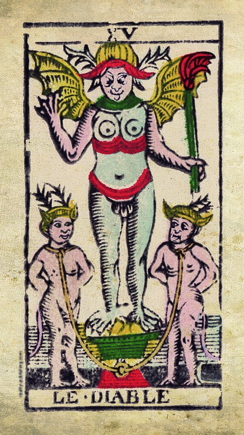
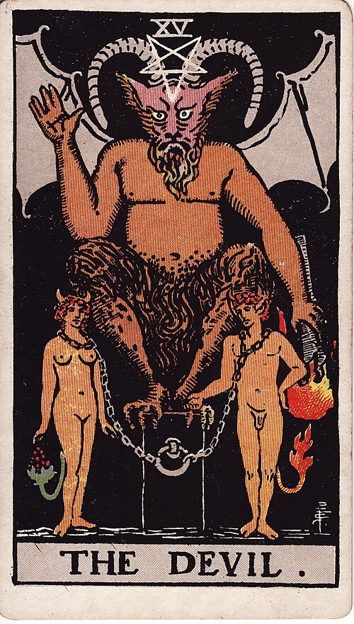
Temperance completes the set of virtues that lesson 7 left open, and her image is among the most stable in the deck: a figure pouring liquid from one vessel into another, which in the fifteenth century showed exactly what it meant — water being mixed into wine too strong to drink. The French pattern gave her wings, and its designer spaced the three virtues evenly through the sequence, at 8, 11 and 14, which is why an angel stands between Death and the Devil. Waite kept the pour and changed the rest: a solar sign on the forehead, a triangle inside a square on the breast, "one foot upon the earth and one upon waters", and "a direct path" to "a great light, through which a crown is seen vaguely" (Pictorial Key, XIV). His list stays down to earth, "Economy, moderation, frugality, management, accommodation", and today's balance, moderation and patience is the same card said more gently.
The Devil has no fifteenth-century painted card to set beside yours, because the surviving hand-painted decks lack him — the Visconti-Sforza is complete apart from the Devil and the Tower — so the oldest picture you can compare is the Marseille one: a horned figure on a pedestal with two small chained figures below. Smith's card keeps that arrangement and redresses the central figure as Éliphas Lévi's Baphomet, "the Horned Goat of Mendes, with wings like those of a bat", the torch inverted, a reversed pentagram on the forehead, and the right hand raised in what Waite calls "the reverse of that benediction which is given by the Hierophant in the fifth card" (Pictorial Key, XV). The two figures below he names outright, "as if Adam and Eve after the Fall", tailed "to signify the animal nature" — set your Lovers beside your Devil and the same couple is there, before and after. Waite's list is fatalistic, "Ravage, violence, vehemence, extraordinary efforts, force, fatality; that which is predestined but is not for this reason evil". Today's reading of attachment, compulsion and addiction rests instead on a detail readers noticed in Smith's drawing: the chains around the couple's necks are slack enough to lift off. "They could easily slip out of them, but they choose to remain in bondage" (Tarot Heritage, on the Devil). Waite's book never says so; the picture does.
The goat-headed Devil is nineteenth-century: Lévi drew Baphomet for Transcendental Magic in 1856, and "Levi's drawing of Baphomet injected a radically new look into occult tarot" (Tarot Heritage). Waite borrowed the figure and rejected Lévi's meaning for it in the same breath — Lévi "affirms that the Baphometic figure is occult science and magic", Waite reports with "more than his usual derision", before giving his own: "the Dweller on the Threshold without the Mystical Garden when those are driven forth therefrom who have eaten the forbidden fruit." Two authors, two doctrines, one card whose Marseille form dates from about 1650.
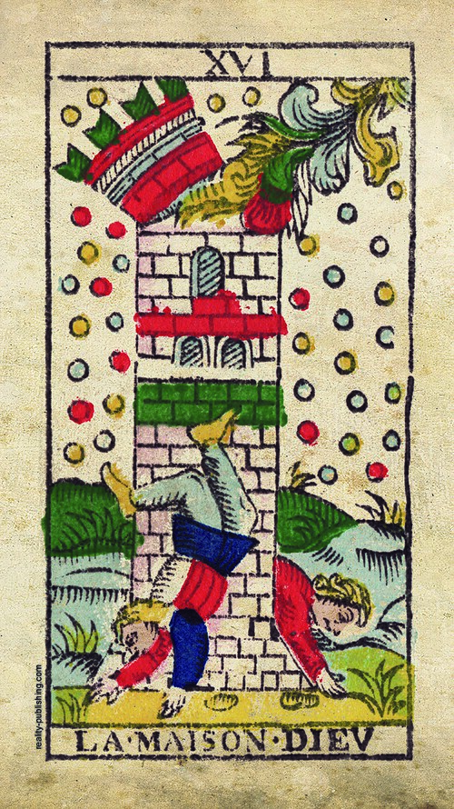
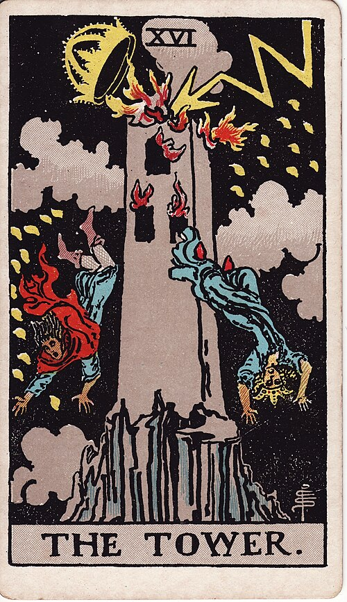
The Tower has been given more names than any other card and has barely changed its meaning. Fifteenth- and sixteenth-century Italian sources call it the Arrow, the Fire, the Lightning and the House of the Devil; the Marseille pattern prints La Maison Dieu; Italian printers copying the French decks in the 1700s wrote La Torre. Through all of it the picture is fire from heaven striking a tower, a scene every churchgoer knew from Sodom, from Babel and from Revelation, and the reading has held: Waite prints "Misery, distress, indigence, adversity, calamity, disgrace, deception, ruin. It is a card in particular of unforeseen catastrophe", his essay calls it "the ruin of the House of Life, when evil has prevailed therein, and above all… the rending of a House of Doctrine" (Pictorial Key, XVI), and today's list says sudden change, upheaval, revelation. For once 1450, 1911 and this morning agree, and the only thing that has shifted is the consolation attached — modern readers add that the structure which falls was false, and that what stands afterwards is sounder.
"We know from literary sources of the 15th and 16th centuries that this card was called Arrow, Fire, Lightning, and the House of the Devil. In later centuries, it was known as La Maison Dieu (The God House) and the Tower" (Tarot Heritage, on the Tower). The Marseille scene itself — struck tower, falling men — is already on a Milanese sheet of uncut cards from about 1500.
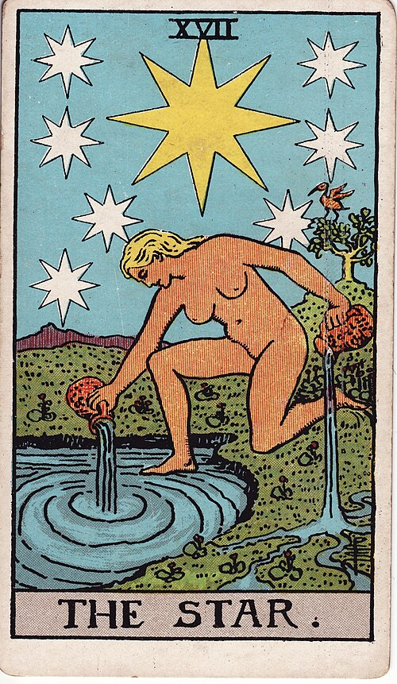
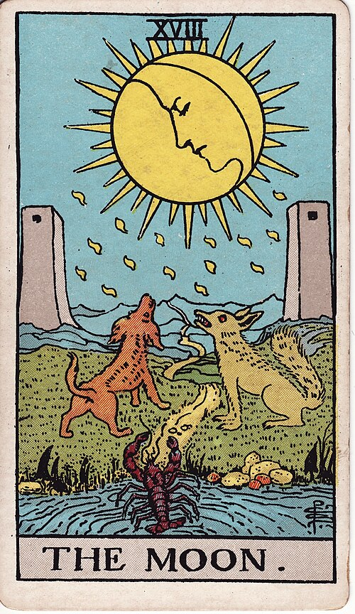
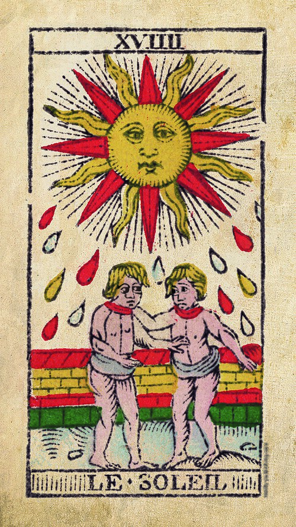
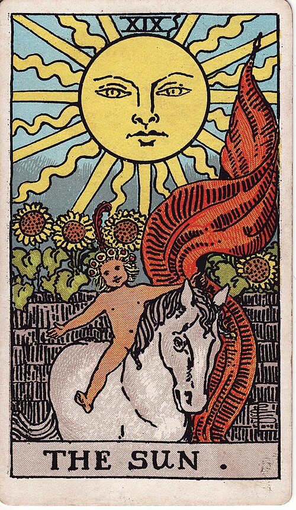
After the fire comes the sky: the Star, the Moon and the Sun carry the least stable pictures in the early decks — a star held up at arm's length, astronomers with instruments, the Magi, Diana with her bow, a woman with a spindle, a boy holding the mask of Helios — and the honest 1450 summary for all three is a celestial light over a scene that varied from deck to deck. Their order has a plain explanation from the game: they run in rising brightness, a full moon outshining the stars and the sun outshining both, so a player knew at a glance which card took the trick. The scenes you own appeared around 1500 — the same Milanese sheet that carries the struck tower already shows the woman with two jugs and the moon over two dogs, towers and a crayfish — and Waite and Smith kept two of them nearly intact.
"The order of the three lights in the trump sequence corresponds to their brightness in the sky. Just as higher numbered trump cards capture lower numbered cards, so a full moon outshines the stars, and the sun outshines both the stars and the moon" (Tarot Heritage, on the celestial lights). The same page calls trumps XV to XXI the Apocalypse sequence, for how closely they track the Book of Revelation — Hell, the fire, the lights, the trumpet, the new world.
The Star carries the same quarrel between printed list and picture that the Hermit carried in lesson 7. Waite prints "Loss, theft, privation, abandonment; another reading says — hope and bright prospects" (Pictorial Key, Part III §3). The first clause is the Etteilla school's card surviving almost word for word — their Star was Desolation: "Privation, Destitution, Abandonment… Theft" — and it reached Waite directly, because Mathers's 1888 pamphlet had already traded it for "Hope, Expectation, Bright promises" (Revak's side-by-side tables; the traditions are the ones lesson 5 traced); the second is the picture. His own essay sides with the picture, if grudgingly — "the summary of several tawdry explanations says that it is a card of hope" — and describes a woman who "pours Water of Life from two great ewers, irrigating sea and land" beneath "a great, radiant star of eight rays, surrounded by seven lesser stars" (Pictorial Key, XVII). The oldest recorded meaning, from Bologna about 1750, is "gift"; the modern one is hope and renewal; and your justification is the picture, in which everything is being poured out freely under an open sky. Say hope, and if anyone asks, show them Waite's own second clause.
The Moon reads the way night reads — "Night" is its first recorded meaning, from the same 1750 list; Waite prints "Hidden enemies, danger, calumny, darkness, terror, deception, occult forces, error"; and his essay gives the sentence worth keeping: "The card represents life of the imagination apart from life of the spirit. The path between the towers is the issue into the unknown. The dog and wolf are the fears of the natural mind in the presence of that place of exit, when there is only reflected light to guide it" (Pictorial Key, XVIII). Today's reading of illusion, fear and the subconscious keeps the half-light and drops the occultists' horror of it, and many modern readers add intuition, treating the same dim landscape as somewhere worth exploring rather than fleeing.
The Sun is the one card here where Waite dropped the Marseille scene on purpose. The French pattern shows two children before a wall; Waite took Lévi's alternative, "the naked child mounted on a white horse and displaying a red standard", a design Lévi knew from a Paris deck of about 1650 (Pictorial Key, XIX; Tarot Heritage, on the Sun). The meaning was never in doubt in either version — Waite prints "Material happiness, fortunate marriage, contentment", and the card has meant joy, success and abundance for as long as anyone has written meanings down. Point at the child, the white horse and the red banner.
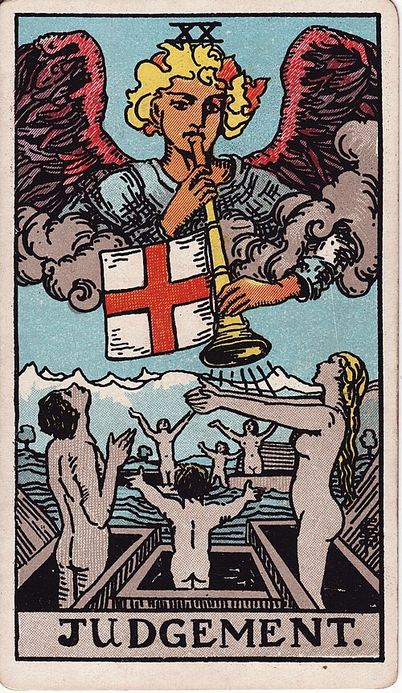
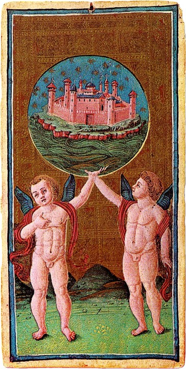
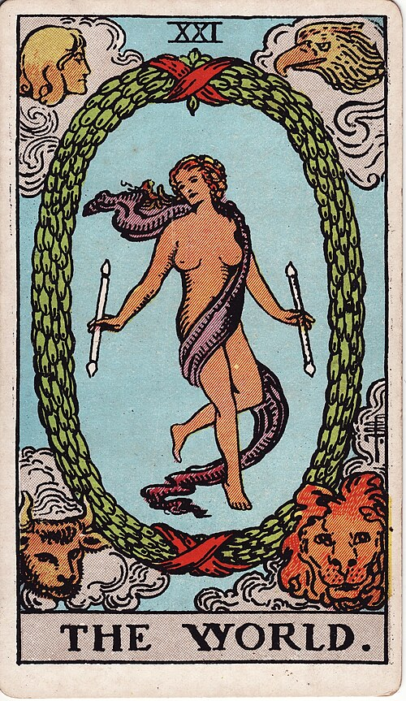
In Italy Judgement was simply "the Angel", and its scene is the one every fresco painter knew: the trumpet, and the dead rising from their tombs. Waite calls the design "essentially invariable in all Tarot sets" (Pictorial Key, XX) and prints "Change of position, renewal, outcome". One part of the story, the sentence itself, has never entered the card's meaning: no tradition reads Judgement as damnation. It is the moment of being called, and today's rebirth, inner calling and absolution reads the raised arms rather than the theology. "The biblical Last Judgment, with punishment for one's sins and the possibility of roasting in Hell for eternity, has never influenced the interpretation of this card" (Tarot Heritage, on Judgement).
The World changed its picture once and its meaning never. The fifteenth-century Italian cards show a landscape inside a circle — the renewed world of Petrarch's Triumph of Eternity, or the New Jerusalem of Revelation — and the Visconti-Sforza version has two putti holding up a globe with a walled city inside. The Marseille pattern replaced the landscape with a dancer inside a wreath and set the four creatures of Ezekiel's vision, the emblems of the four evangelists, in the corners: the same four Smith painted onto the Wheel of Fortune in lesson 7. Waite kept the whole design, calling it "unchanged — and indeed unchangeable" (Pictorial Key, XXI), and prints "Assured success, recompense, voyage, route, emigration, flight, change of place". An eighteenth-century list already gave "a long journey". Completion and accomplishment are today's words, and travel survives in most lists as the older meaning's remainder.
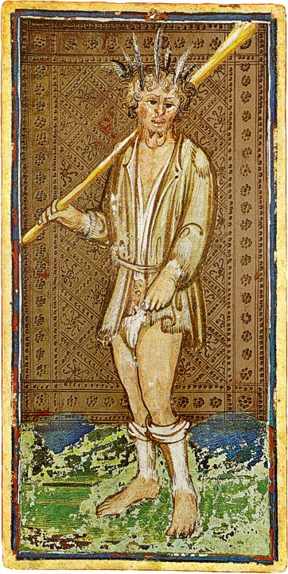
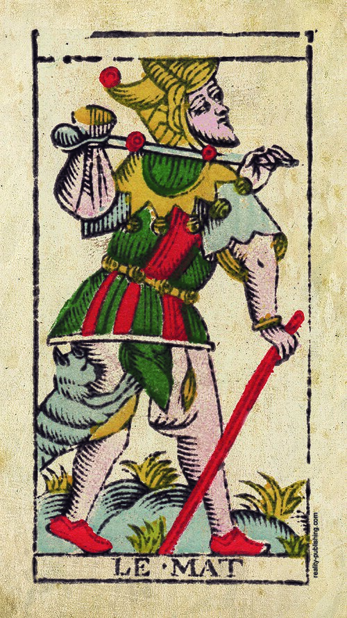
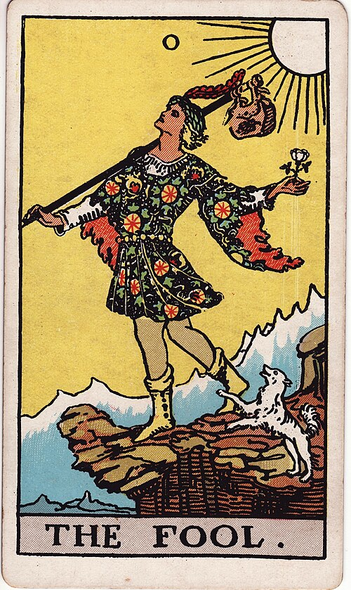
Lesson 1 gave you the Fool's rule: in the game he was not a trump but the "excuse", a card you could play instead of following suit, winning nothing and outranking nobody. His picture matched his rank: the Visconti-Sforza Fool is a madman in rags with feathers in his hair, a club to fend off dogs and a goitre on his neck, the same figure Giotto had painted as the vice of folly a century and a half earlier. The Marseille card turns him into a wanderer on the road, bundle over his shoulder and an animal at his legs, and the first recorded fortune-telling meaning, again from Bologna about 1750, is "madness". Waite's printed list still describes that card: "Folly, mania, extravagance, intoxication, delirium, frenzy, bewrayment." His picture is something else entirely — "a young man in gorgeous vestments pauses at the brink of a precipice… The edge which opens on the depth has no terror; it is as if angels were waiting to uphold him… He is the spirit in search of experience" (Pictorial Key, 0). The two halves of the Pictorial Key disagree more on this card than on any other, and modern practice has gone with the picture: beginnings, innocence, spontaneity, the step taken on trust.
"This card experienced the most extreme makeover of any Tarot trump, going in stages from a mentally ill outcast, through a vagabond street entertainer, to a self-actualizing free spirit" — and on the game: the Fool "has no rank and no power, yet he can pop up anywhere to mimic any card; making him, ironically, one of the most valuable cards in the deck" (Tarot Heritage, on the Fool).
Your deck puts the Fool first, before the Magician. Waite's book puts him between Judgement and the World, and the game put him nowhere at all. Each placement has a date and an author, and this is the part of the lesson to keep straight, because the modern habit of reading the trumps as the Fool's journey from I to XXI depends entirely on the third of them.
Waite explains his own order and refuses to defend it: "I have also not adopted the prevailing attribution of the cards to the Hebrew alphabet — firstly, because it would serve no purpose in an elementary handbook; secondly, because nearly every attribution is wrong. Finally, I have not attempted to rectify the position of the cards in their relation to one another; the Zero therefore appears after No. 20, but I have taken care not to number the World or Universe otherwise than as 21. Wherever it ought to be put, the Zero is an unnumbered card" (Pictorial Key, Part II §3, 1911). The position after XX is the French occult convention, which tied the Fool to the letter Shin; Waite kept the convention on the page while calling the reasoning behind it wrong.
Book T's table of the twenty-two Keys begins "Fool — The Spirit of Ether — א — air" and runs the Hebrew alphabet from there, so in Golden Dawn doctrine the Fool is Aleph and stands first (Book T). That placement is why a modern deck starts at 0, and it is the premise of the "Fool's Journey" — Eden Gray's reading, from the 1960s and 70s, in which the Fool travels through the other twenty-one cards in turn. It is a coherent and useful scheme, and about as old as the light bulb.
As in lesson 7: the third column is Waite's own printed lists, compressed (Pictorial Key, Part III §3), and the last column is what you point at. The full twenty-two, with the Book T titles and a spoken line per card, are on the trumps sheet.
| Trump | In 1450 | Waite prints (1911) | Point at |
|---|---|---|---|
| XII Hanged Man | Il Traditore — a traitor hung by one foot, as in the shame paintings | "Wisdom, circumspection, discernment, trials, sacrifice" | Living T-shaped tree; halo; calm face; hands behind the back |
| XIII Death | Death on horseback riding down every rank | "End, mortality, destruction, corruption" | White-rose banner; fallen king; pleading bishop; sun between two towers |
| XIV Temperance | Cardinal virtue: Temperance — water into wine | "Economy, moderation, frugality, management, accommodation" | One foot in the pool, one on land; triangle in a square; path to a lit crown |
| XV Devil | The Devil of sermons and frescoes; no painted card survives | "Ravage, violence… fatality; predestined but not for this reason evil" | Inverted torch; reversed pentagram; loose chains; the Hierophant's gesture reversed |
| XVI Tower | "Arrow", "Fire", "Lightning", "House of the Devil" | "Misery, distress… ruin. A card of unforeseen catastrophe" | Crown struck off; two figures falling; flames from three windows |
| XVII Star | A star over people who point or reach — scene varied | "Loss, theft, privation, abandonment; another reading says — hope" — picture wins: hope | Eight-rayed star and seven lesser; two jugs, land and water; bird on the tree |
| XVIII Moon | The moon over astronomers, or Diana — scene varied | "Hidden enemies, danger, calumny, darkness, terror, deception" | Dog and wolf; crayfish leaving the pool; path between two towers |
| XIX Sun | The sun over a spinner, or a boy with Helios's mask; Marseille: two children | "Material happiness, fortunate marriage, contentment" | Naked child on a white horse; red banner; sunflowers over the wall |
| XX Judgement | "The Angel" — the Last Judgement's trumpet | "Change of position, renewal, outcome" | Trumpet with a cross banner; grey figures rising from coffins |
| XXI World | Il Mondo — a landscape in a circle: Paradise or Eternity | "Assured success, recompense, voyage, route, emigration" | Laurel wreath; two wands; the Wheel's four creatures in the corners |
| 0 Fool | Il Matto — a madman in rags; the game's excuse | "Folly, mania, extravagance, intoxication, delirium" — picture wins: the beginning | Cliff edge; bundle on a stick; white dog; sun behind him |
Ten minutes, trumps XII to XXI and the Fool.
Lesson 8 promised the trumps their own drill once the sequence was complete, and it is complete now. The card back gives the scene, the line to say at the table, and the 1450 identity as the memory glue; grade yourself against the point of the line, not its exact words. Run the second half first, then the first half from lesson 7, and only then the full twenty-two — and come back to it in two days, on the same schedule as the suit cards.
One attempt per question, no scrolling back up.
In fifteenth-century Italy, the man hanging by one foot on trump XII was understood as…
The card was Il Traditore, and hanging by one foot was how the shame paintings showed traitors who had escaped execution. Prudence and wisdom arrived with Court de Gébelin in 1781; the trance and the living tree are Waite's, from 1909.
Waite prints "Loss, theft, privation, abandonment" for the Star, yet this course says hope, because…
The rule from lesson 5 holds on trumps: the picture wins a conflict with a printed list. Waite's first clause is inherited fortune-telling; his "another reading says — hope" and his own essay ("a card of hope") side with the scene of water poured out under an open sky. Book T's title and the Italian astronomers are true facts that do not decide the meaning.
The Star, the Moon and the Sun stand in that order because…
The order follows brightness, which is the game's own logic of higher trumps capturing lower ones. The Bible names them as sun, moon and stars, and the old model of the heavens would run Moon, Sun, Star — neither matches the deck.
Waite's Pictorial Key discusses the Fool between Judgement and the World because…
His own words: "I have not attempted to rectify the position of the cards… the Zero therefore appears after No. 20." The Golden Dawn placed the Fool first, as Aleph — which is the order your deck follows, not the order of Waite's book.
Blind from lesson 8: the Eight of Cups. Say the scene and the meaning aloud, then pick the line that matches.
Under a waning moon a figure walks away from eight neatly stacked cups — Book T's "Abandoned Success". Nothing is broken and nothing is being kept; the cups are left whole, and that is the point of the card.
Read four pages of Tarot Heritage's card-by-card history — the Hanged Man, the Tower, the celestial lights and the Fool. Each one walks a single card from a 1450 fresco to a 1909 drawing with the sources named, which is the discipline this course is trying to teach you. Then read Waite's own essays for the same cards, a page each, starting at the Hanged Man and following the Next links, and notice how often he describes a detail precisely and then declines to say what it means.
I am your teacher here — ask me things. The second half of the sequence carries more theology than the first, and this page compressed it hard. Some good ones to throw at me:
“Why are the Devil and the Tower missing from the Visconti-Sforza deck?” · “Is the Fool's Journey worth using if it is only fifty years old?” · “What are the little flames falling on the Tower and the Moon?” · “Why do Death and the Moon share the same two towers?” · “Which of these eleven do readers use most differently from Waite's lists?” · “Drill me on the trumps I keep missing.”